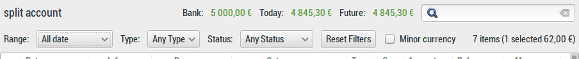

Cleared status to enrich the transaction status
A cleared status for transaction was added, to enrich the existing status. You now
also have a Status column into the transaction list to display a new set of status for transactions.
|
A cleared status for transaction was added, to enrich the existing status. You now
also have a Status column into the transaction list to display a new set of status for transactions.
|
| I finally found some time to code a new graph report dedicated to budget, please welcom the stack chart that clarify so much the budget report ! |
|
In the transaction window, right to the balance you will now find a quick search input to fast filter transaction based on text column. The search apply to all columns except status, date and amount columns. |
 |
|
Starting 4.6, you can define your fiscal year start/end date. Previously the fiscal year was aligned to the calendar year, starting on 1st january and ending on 31 december. |
|
Insert a scheduled transaction can be controled to avoid insert on weekend and to automatically change the date to before or after. |
|
You now have 2 buttons below the scheduled list on the main window, one to Skip, one to Post, and this for every scheduled you want to manage manually. If the scheduled transaction can be posted as it, it will be, otherwise if the amount or target account is not prefilled, you will be prompted with the trasaction dialog to make any changes before posting the transaction. |
 |
Top 5 Spending report !
|
Top 5 spending category new report can be optionally displayed into the main window. The date range can be configured within the preferences, and changed main-window too. |
|
This is a long time wish which is now possible into HomeBank. You can split non internal transfer up to 10 categories. A new button was added on the right of the amount widget into the transaction dialog. |
The account window now have a new filter / information bar.

Here is a description from left to right:
You can now insert transaction within a specific day in the
next month.
So for example, you can add until the 28th of each month, the
selected date excluded, which mean transaction that should occurs
on 28 will not be inserted.
You can keep the previous behavior to add xx days into the future from today's date.
 :
: